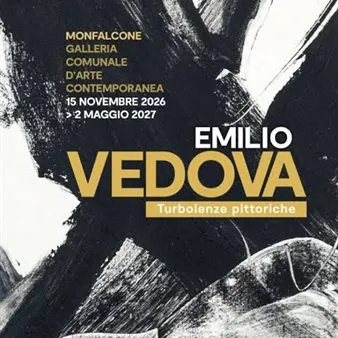

da sab 14 nov a dom 2 mag · dalle 11:00
Emilio Vedova. Turbolenze pittoriche
La Galleria Comunale d’Arte Contemporanea di Monfalcone si prepara ad accogliere l’universo espressivo di Emilio Vedova, uno tra i massimi esponenti dell'Arte Informale in Italia e in Europa. L'Informale è un movimento artistico nato tra la fine degli anni Quaranta e gli anni…
 Indicazioni
Indicazioni
- Costi e prenotazioni
- Costo non indicato · Prenotazione non indicata
- Programma
- Programma da verificare. Apri la fonte ufficiale per orari e possibili aggiornamenti.
- In caso di maltempo
- Nessuna indicazione specifica pubblicata.
- Note
- Acquisito automaticamente dalla fonte.
L’EVENTO
Descrizione completa
La Galleria Comunale d’Arte Contemporanea di Monfalcone si prepara ad accogliere l’universo espressivo di Emilio Vedova, massimo esponente dell'Arte Informale in Italia.
L'Informale è un movimento artistico nato tra la fine degli anni Quaranta e gli anni Cinquanta del Novecento TgQPHd|||[[[null,null,null,null,null,null,null,null,null,null,null,null,[247864,null,0]]]] , sorto come reazione traumatica alla crisi ideologica, culturale e sociale provocata dalla Seconda Guerra Mondiale. La corrente rifiuta la prospettiva, la geometria e le figure riconoscibili, concentrandosi sul processo esecutivo TgQPHd|||[] , sulla spontaneità del gesto TgQPHd|||[] e sul valore espressivo della materia. Il colore viene steso con colpi rapidi, spatolate energetiche e movimenti ampi del braccio. Sulla tela vengono utilizzati elementi non tradizionali come sabbia, plastiche, sacchi di iuta, catrame, rottami.
Tutte queste caratteristiche si ritrovano nelle opere della mostra “Emilio Vedova. Turbolenze pittoriche”, curata da Cesare Orler, visitabile dal 15 novembre 2026 al 2 maggio 2027 in Galleria Comunale d’Arte Contemporanea di Monfalcone
Un percorso artistico che attraversa la vita e la produzione del grande artista, seguendone l’evoluzione attraverso le tappe fondamentali, decennio dopo decennio.
L'esposizione rientra in un progetto istituzionale nato dalla collaborazione tra Comune di Monfalcone, Regione Friuli Venezia Giulia, Io Sono Friuli Venezia Giulia, Fondazione CARIGO e BCC Venezia Giulia.
L'inaugurazione è prevista per sabato 14 novembre alle ore 11:00.
La mostra sarà aperta al pubblico con i seguenti orari: mercoledì 10:00-13:00; venerdì, sabato, domenica e festivi 10:00-13:00 e 15:00-19:00.
Sono previste visite guidate all'esposizione nelle giornate di: venerdì ore 17:30, sabato, domenica e festivi ore 11:00 / 16:00 / 17:30.
Per le visite guidate è consigliata la prenotazione!
Ingresso gratuito.
Per informazioni e prenotazioni:
tel. 0481 494177 / 371
e-mail: galleria.didattica@comune.monfalcone.go.it
IL PROGRAMMA
Programma e orari
Appuntamenti raccolti dalle fonti elencate. Dove manca un orario, non è ancora disponibile in questa scheda.
Programma pubblicato
- Dal 2026-11-14 al 2027-05-02
INFORMAZIONI UTILI
Prima di partire
- Controllare la fonte prima di partire.
ORGANIZZAZIONE